Chapter 5 Visualizing: ggplot2
Why do we start with data visualization? Not only is data viz a big part of analysis, it’s a way to SEE your progress as you learn to code.
“ggplot2 implements the grammar of graphics, a coherent system for describing and building graphs. With ggplot2, you can do more faster by learning one system and applying it in many places.” - R4DS
This lesson borrows heavily from Hadley Wickham’s R for Data Science book, and the Data Carpentry R for Ecology curriculum.
5.1 Objectives & Resources
5.1.1 Objectives
- install our first package,
ggplot2, by installingtidyverse - learn ggplot2 with
mpgdataframe (important to play with other data than your own, you’ll learn something.) - practice writing a script in RMarkdown
- practice the rstudio-github workflow
5.1.2 Resources
Here are some additional resources for data visualization in R:
5.2 Install our first package: tidyverse
Packages are bundles of functions, along with help pages and other goodies that make them easier for others to use, (ie. vignettes).
So far we’ve been using packages that are already included in base R. These can be considered out-of-the-box packages and include things such as sum and mean. You can also download and install packages created by the vast and growing R user community. The most traditional place to download packages is from CRAN, the Comprehensive R Archive Network. This is where you went to download R originally, and will go again to look for updates. You can also install packages directly from GitHub, which we’ll do tomorrow.
You don’t need to go to CRAN’s website to install packages, we can do it from within R with the command install.packages("package-name-in-quotes").
We are going to be using the package ggplot2, which is actually bundled into a huge package called tidyverse. We will install tidyverse now, and use a few functions from the packages within. Also, check out tidyverse.org/.
## from CRAN:
install.packages("tidyverse") ## do this once only to install the package on your computer.library(tidyverse) ## do this every time you restart R and need it When you do this, it will tell you which packages are inside of tidyverse that have also been installed. Note that there are a few name conflicts; it is alerting you that we’ll be using two functions from dplyr instead of the built-in stats package.
What’s the difference between install.packages() and library()? Why do you need both? Here’s an analogy:
install.packages()is setting up electricity for your house. Just need to do this once (let’s ignore monthly bills).library()is turning on the lights. You only turn them on when you need them, otherwise it wouldn’t be efficient. And when you quit R, it turns the lights off, but the electricity lines are still there. So when you come back, you’ll have to turn them on again withlibrary(), but you already have your electricity set up.
You can also install packages by going to the Packages tab in the bottom right pane. You can see the packages that you have installed (listed) and loaded (checkbox). You can also install packages using the install button, or check to see if any of your installed packages have updates available (update button). You can also click on the name of the package to see all the functions inside it — this is a super helpful feature that I use all the time.
5.3 Plotting with ggplot2
ggplot2 is a plotting package that makes it simple to create complex plots from data in a data frame. It provides a more programmatic interface for specifying what variables to plot, how they are displayed, and general visual properties. Therefore, we only need minimal changes if the underlying data change or if we decide to change from a bar plot to a scatterplot. This helps in creating publication quality plots with minimal amounts of adjustments and tweaking.
ggplot likes data in the ‘long’ format: i.e., a column for every dimension, and a row for every observation. Well structured data will save you lots of time when making figures with ggplot.
ggplot graphics are built step by step by adding new elements. Adding layers in this fashion allows for extensive flexibility and customization of plots.

5.4 Data
We are going to use the mpg dataset which provides information on fuel economy data for 38 car models.
This data comes preloaded with the tidyverse so it is already loaded into R. Let’s take a look at it.
mpg## # A tibble: 234 x 11
## manufacturer model displ year cyl trans drv cty hwy
## <chr> <chr> <dbl> <int> <int> <chr> <chr> <int> <int>
## 1 audi a4 1.8 1999 4 auto(l5) f 18 29
## 2 audi a4 1.8 1999 4 manual(m5) f 21 29
## 3 audi a4 2.0 2008 4 manual(m6) f 20 31
## 4 audi a4 2.0 2008 4 auto(av) f 21 30
## 5 audi a4 2.8 1999 6 auto(l5) f 16 26
## 6 audi a4 2.8 1999 6 manual(m5) f 18 26
## 7 audi a4 3.1 2008 6 auto(av) f 18 27
## 8 audi a4 quattro 1.8 1999 4 manual(m5) 4 18 26
## 9 audi a4 quattro 1.8 1999 4 auto(l5) 4 16 25
## 10 audi a4 quattro 2.0 2008 4 manual(m6) 4 20 28
## # ... with 224 more rows, and 2 more variables: fl <chr>, class <chr>This dataframe is already in a long format where all rows are an observation and all columns are variables. Among the variables in mpg are:
displ, a car’s engine size, in litres.hwy, a car’s fuel efficiency on the highway, in miles per gallon (mpg). A car with a low fuel efficiency consumes more fuel than a car with a high fuel efficiency when they travel the same distance.
To learn more about mpg, open its help page by running ?mpg.
Now we’re going to visualize the data that is held in this dataframe.
To build a ggplot, we need to:
- use the
ggplot()function and bind the plot to a specific data frame using the
dataargument
ggplot(data = mpg)- define aesthetics (
aes), by selecting the variables to be plotted and the
variables to define the presentation such as plotting size, shape color, etc.
Run this code to put displ on the x-axis and hwy on the y-axis:
ggplot(data = mpg, aes(x = displ, y = hwy))- add
geoms– graphical representation of the data in the plot (points, lines, bars).ggplot2offers many different geoms; we will use some common ones today, including:geom_point()for scatter plots, dot plots, etc.geom_bar()for bar chartsgeom_line()for trend lines, time-series, etc.
To add a geom to the plot use + operator. Because we have two continuous variables,
let’s use geom_point() first:
ggplot(data = mpg, aes(x = displ, y = hwy)) +
geom_point()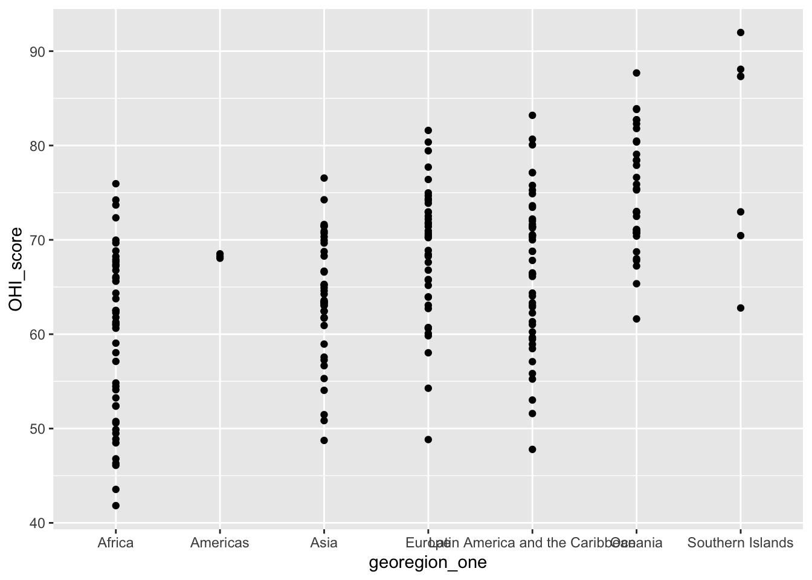
The + in the ggplot2 package is particularly useful because it allows you to modify existing ggplot objects. This means you can easily set up plot “templates” and conveniently explore different types of plots, so the above plot can also be generated with code like this:
# Assign plot to a variable
car_plot <- ggplot(data = mpg, aes(x = displ, y = hwy))
# Draw the plot
car_plot +
geom_point()Notes:
- Anything you put in the
ggplot()function can be seen by any geom layers that you add (i.e., these are universal plot settings). This includes the x and y axis you set up inaes(). - You can also specify aesthetics for a given geom independently of the aesthetics defined globally in the
ggplot()function. - The
+sign used to add layers must be placed at the end of each line containing a layer. If, instead, the+sign is added in the line before the other layer,ggplot2will not add the new layer and will return an error message.
STOP: let’s Commit, Pull and Push to GitHub
5.5 Building your plots iteratively
Building plots with ggplot is typically an iterative process. We start by defining the dataset we’ll use, lay the axes, and choose a geom:
ggplot(data = mpg, aes(x = displ, y = hwy)) +
geom_point()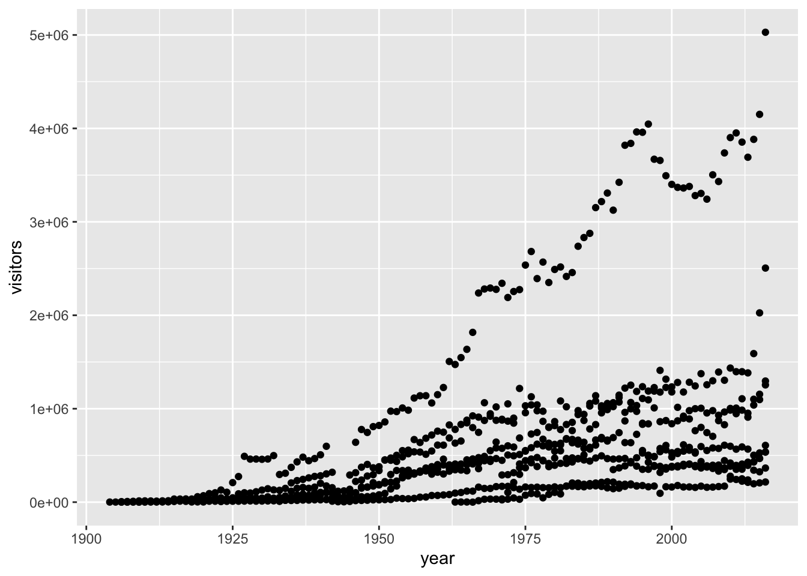
Then, we start modifying this plot to extract more information from it. For instance, we can add transparency (alpha) to avoid overplotting:
ggplot(data = mpg, aes(x = displ, y = hwy)) +
geom_point(alpha = 0.4)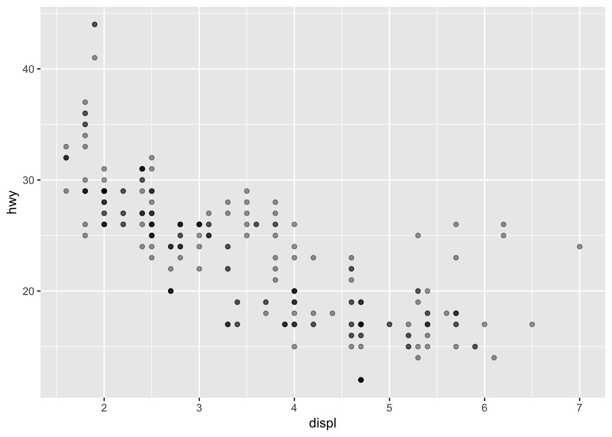
Or to color each species in the plot differently:
ggplot(data = mpg, aes(x = displ, y = hwy)) +
geom_point(aes(color = class))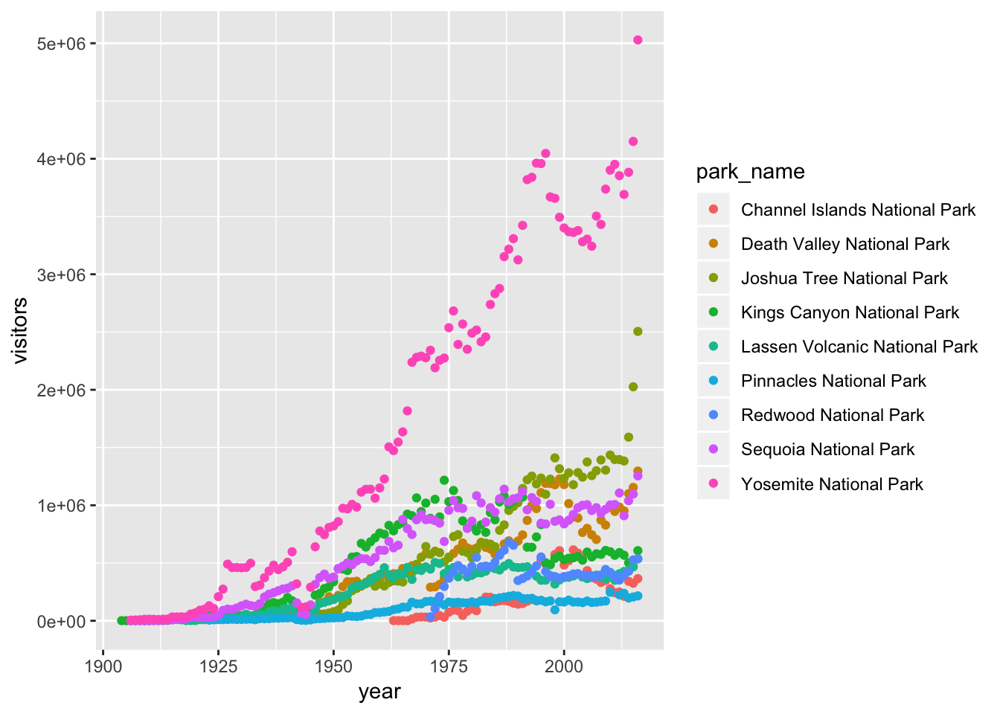
In the above example, we mapped class to the color aesthetic, but we could have mapped class to the shape aesthetic in the same way. In this case, the shape of each point would reveal its class affiliation.
ggplot(data = mpg) +
geom_point(mapping = aes(x = displ, y = hwy, shape = class))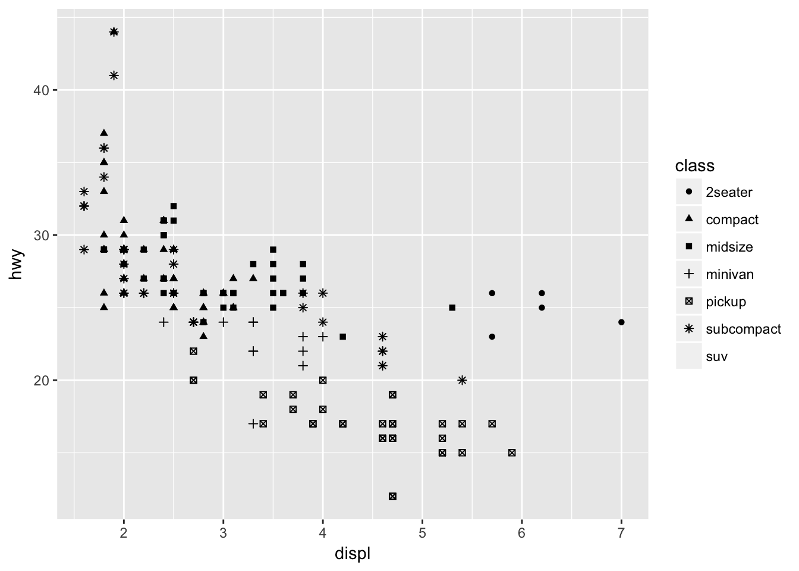
What happened to the SUVs? ggplot2 will only use six shapes at a time. By default, additional groups will go unplotted when you use the shape aesthetic.
5.5 Exercise
Make a scatterplot of
hwyvsctywith different size points representing each car class and different colors for each fuel type.
We get a warning here, because mapping an unordered variable (class) to an ordered aesthetic (size) is not a good idea.
ggplot(data = mpg) +
geom_point(mapping = aes(x = cty, y = hwy, size = class, color = fl))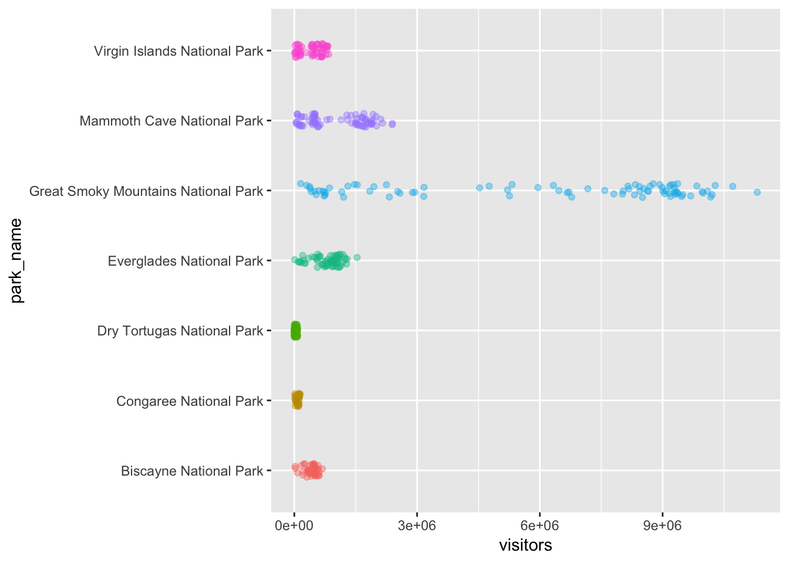
We can also add colors for all the points. Here, the color doesn’t convey information about a variable, but only changes the appearance of the plot. To set an aesthetic manually, set the aesthetic by name as an argument of your geom function; i.e. it goes outside of aes(). You’ll need to pick a value that makes sense for that aesthetic:
The name of a color as a character string.
The size of a point in mm.
The shape of a point as a number.
ggplot(data = mpg, aes(x = displ, y = hwy)) +
geom_point(alpha = 0.4, color = "blue")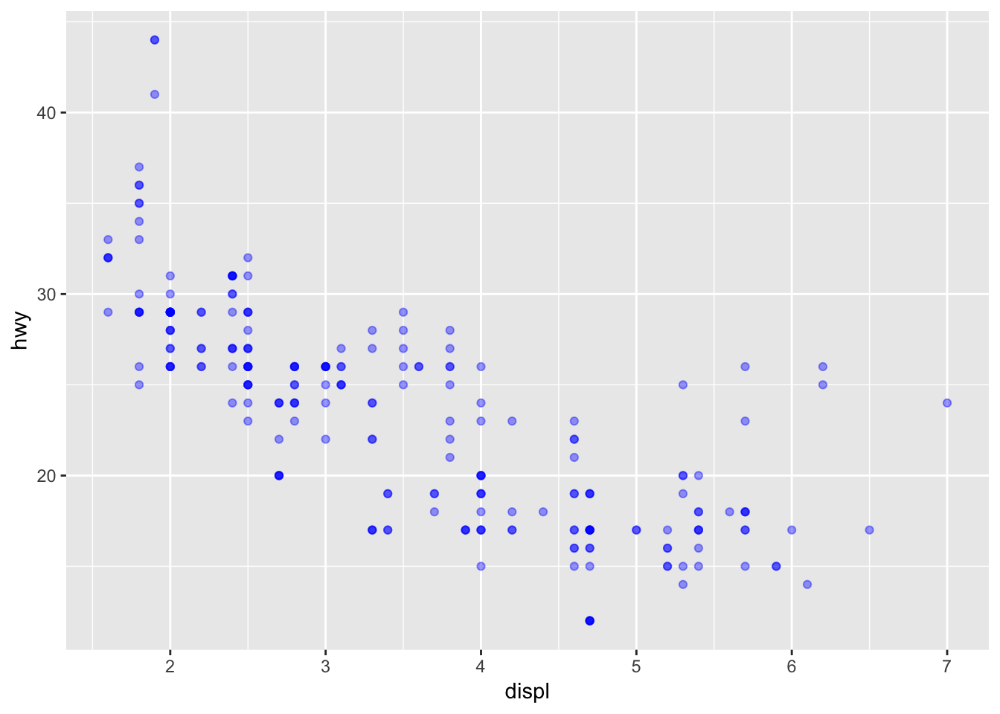
5.5 Exercise
- What’s gone wrong with this code?
ggplot(data = mpg) +
geom_point(aes(x = displ, y = hwy, color = "blue"))
- Plot
hwyvsdispland have the point color to indicatectympg.- Now instead of color, use shape to indicate
ctympg. Why are these two aesthetics behaving differently?- What happens if you map an aesthetic to something other than a variable name, like
aes(colour = displ < 5)?
STOP: commit, pull and push to github
5.6 Faceting
ggplot has a special technique called faceting that allows the user to split one plot into multiple plots based on a factor included in the dataset. We will use it to make a time series plot for each car manufacturer:
ggplot(data = mpg, aes(x = displ, y = hwy)) +
geom_point() +
facet_wrap(~ manufacturer)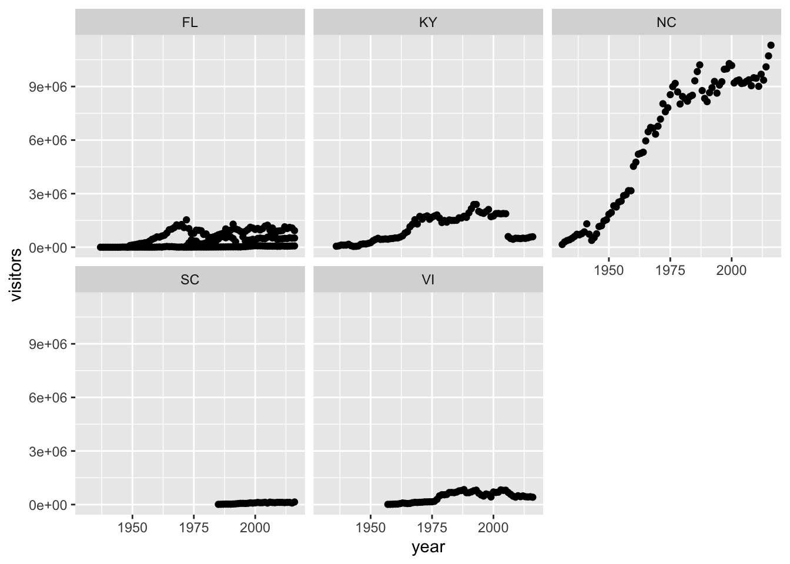
We can now make the faceted plot by splitting further by class using color (within a single plot):
ggplot(data = mpg, aes(x = displ, y = hwy, color = class)) +
geom_point() +
facet_wrap(~ manufacturer)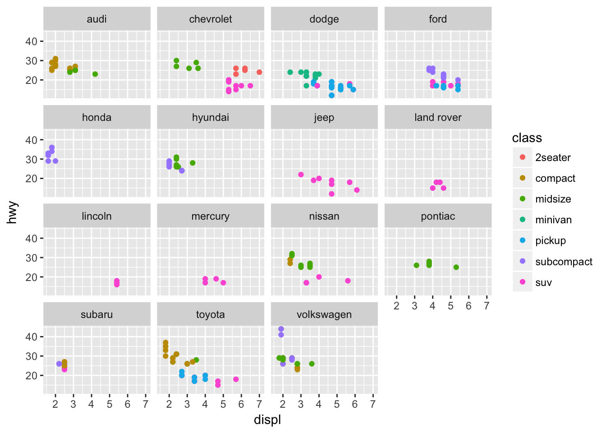
Usually plots with white background look more readable when printed. We can set the background to white using the function theme_bw().
ggplot(data = mpg, aes(x = displ, y = hwy, color = class)) +
geom_point() +
facet_wrap(~ manufacturer) +
theme_bw()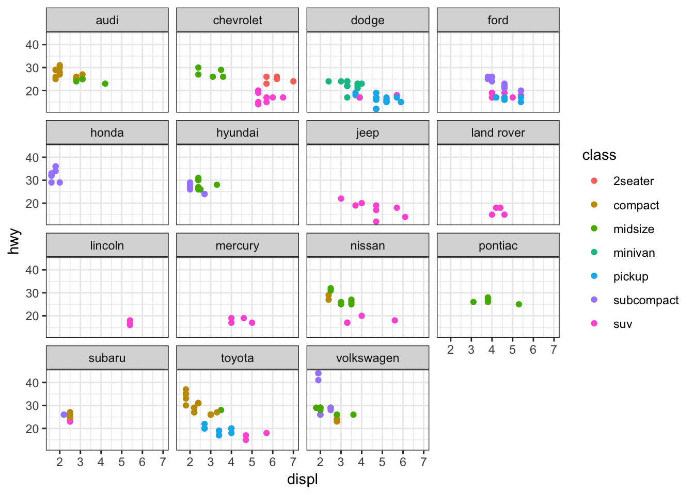
5.7 ggplot2 themes
In addition to theme_bw(), which changes the plot background to white, ggplot2 comes with several other themes which can be useful to quickly change the look of your visualization.
The ggthemes package provides a wide variety of options (including an Excel 2003 theme). The ggplot2 extensions website provides a list of packages that extend the capabilities of ggplot2, including additional themes.
5.7 Exercise
Spend a couple minutes trying out your plot with different plot themes. The complete list of themes in
ggplot2is available at http://docs.ggplot2.org/current/ggtheme.html. But for some more interesting themes, try installing theggthemespackage and using one of those themes. You can find more information on this package at https://cran.r-project.org/web/packages/ggthemes/vignettes/ggthemes.html
5.8 Geometric objects (geoms)
A geom is the geometrical object that a plot uses to represent data. People often describe plots by the type of geom that the plot uses. For example, bar charts use bar geoms, line charts use line geoms, boxplots use boxplot geoms, and so on. Scatterplots break the trend; they use the point geom. You can use different geoms to plot the same data. To change the geom in your plot, change the geom function that you add to ggplot(). Let’s look at the number of cars in each driving class (drv).
ggplot(mpg, aes(x = drv, y = hwy)) +
geom_jitter()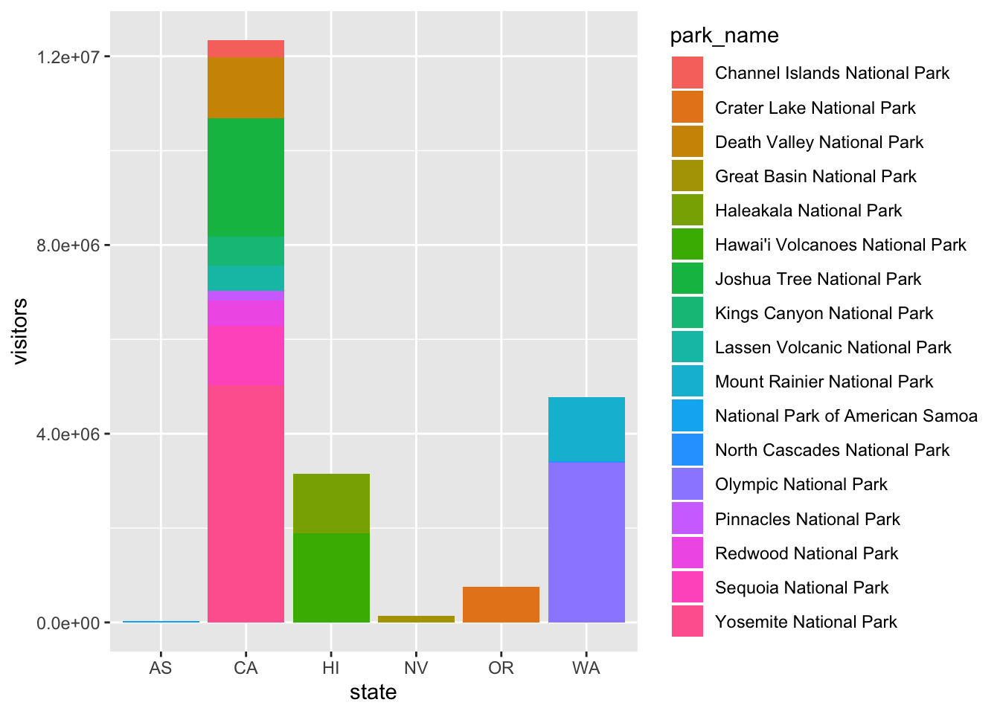
ggplot(mpg, aes(x = drv, y = hwy)) +
geom_boxplot()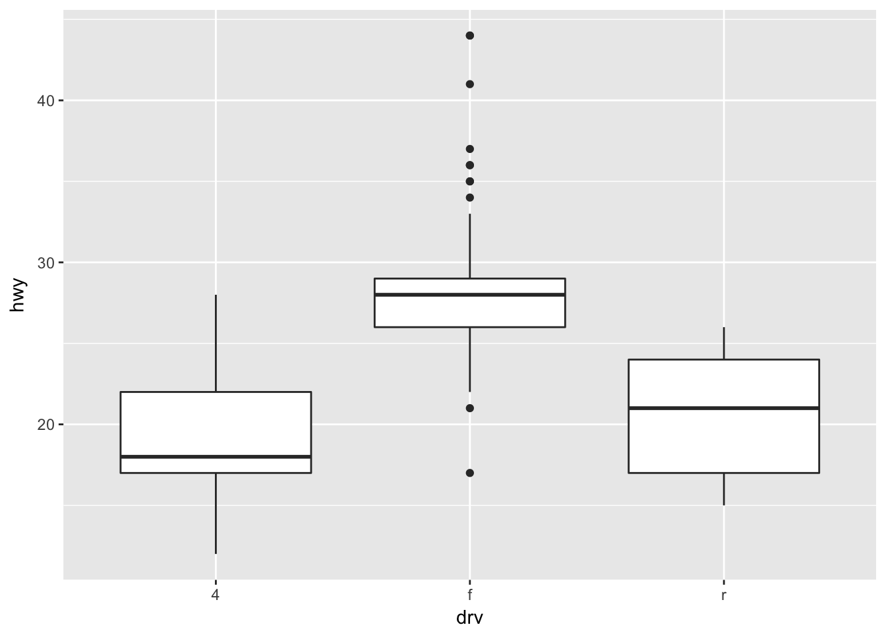
ggplot(mpg, aes(x = drv, y = hwy)) +
geom_violin()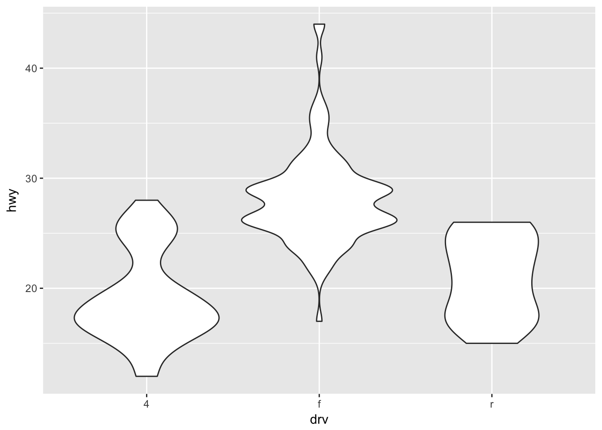
To plot a smoothed mean from the data above, use geom_smooth.
ggplot(data = mpg) +
geom_smooth(aes(x = displ, y = hwy))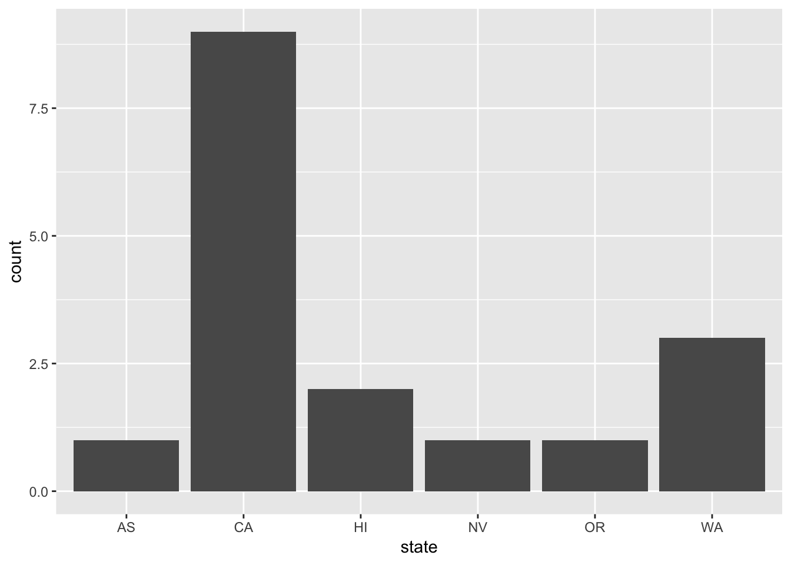
ggplot2 provides over 30 geoms, and extension packages provide even more (see https://www.ggplot2-exts.org for a sampling). The best way to get a comprehensive overview is the ggplot2 cheatsheet. To learn more about any single geom, use help: ?geom_smooth.
To display multiple geoms in the same plot, add multiple geom functions to ggplot():
ggplot(data = mpg) +
geom_point(aes(x = displ, y = hwy)) +
geom_smooth(aes(x = displ, y = hwy))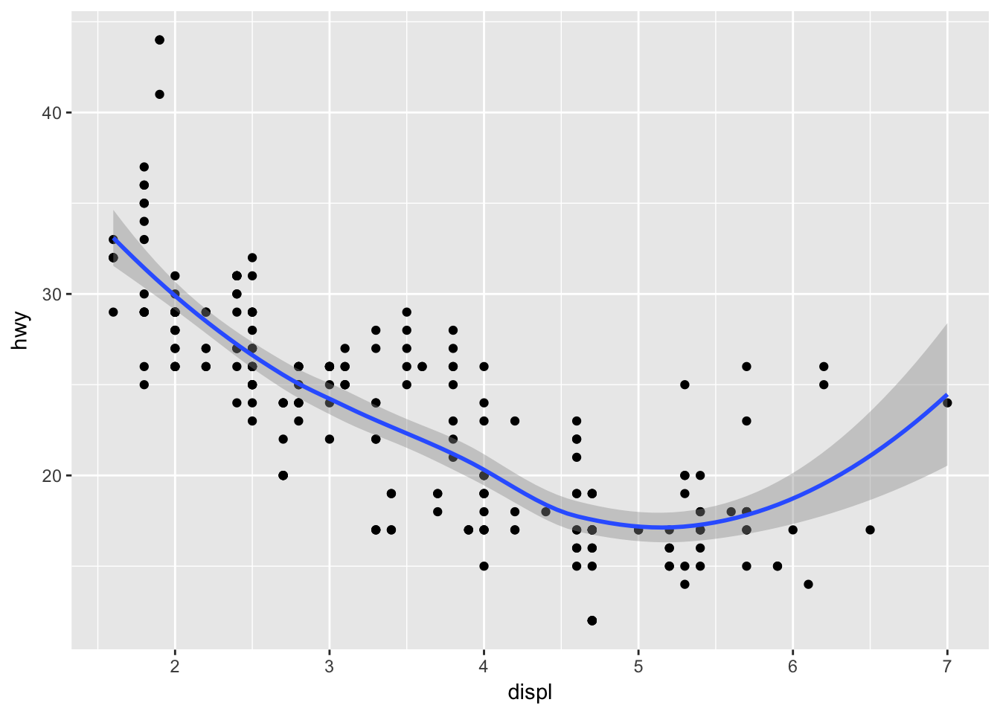
Notice that this plot contains two geoms in the same graph!
This, however, introduces some duplication in our code. Imagine if you wanted to change the y-axis to display cty instead of hwy. You’d need to change the variable in two places, and you might forget to update one. You can avoid this type of repetition by passing a set of mappings to ggplot(). ggplot2 will treat these mappings as global mappings that apply to each geom in the graph. In other words, this code will produce the same plot as the previous code:
ggplot(data = mpg, mapping = aes(x = displ, y = hwy)) +
geom_point() +
geom_smooth()If you place mappings in a geom function, ggplot2 will treat them as local mappings for the layer. It will use these mappings to extend or overwrite the global mappings for that layer only. This makes it possible to display different aesthetics in different layers.
ggplot(data = mpg, aes(x = displ, y = hwy)) +
geom_point(aes(color = class)) +
geom_smooth()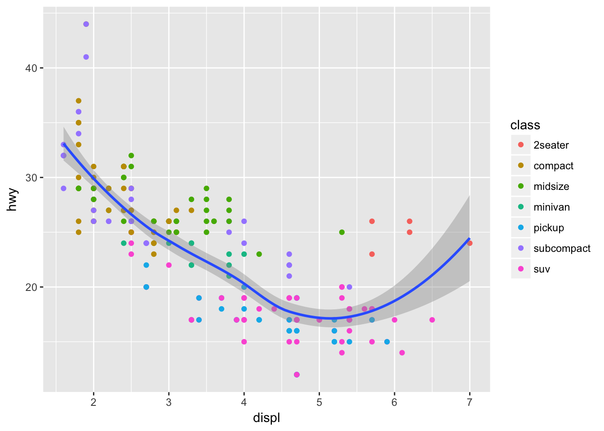
5.9 Customization
Take a look at the ggplot2 cheat sheet, and think of ways you could improve the plot.
Now, let’s change names of axes to something more informative than ‘hwy’ and ‘displ’ and add a title to the figure:
ggplot(data = mpg, aes(x = displ, y = hwy)) +
geom_point(aes(color = class)) +
geom_smooth() +
labs(title = "Relationship between engine size and miles per gallon (mpg)",
x = "Highway MPG",
y = "Engine displacement (liters)") +
theme_bw()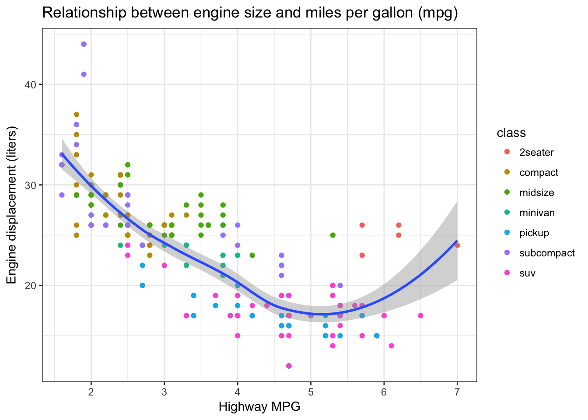
The axes have more informative names, but their readability can be improved by increasing the font size:
ggplot(data = mpg, aes(x = displ, y = hwy)) +
geom_point(aes(color = class)) +
geom_smooth() +
labs(title = "Relationship between engine size and mpg",
x = "Highway MPG",
y = "Engine displacement (liters)") +
theme_bw() +
theme(text=element_text(size = 16))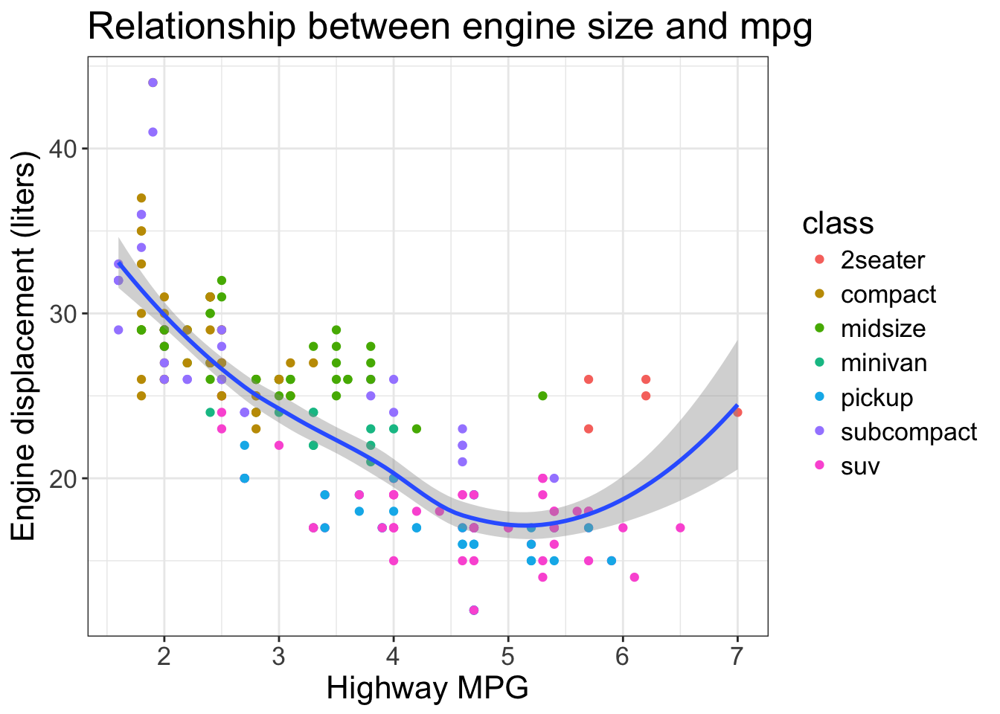
5.9 Challenge
With all of this information in hand, please take another five minutes to either improve one of the plots generated in this exercise or create a beautiful graph of your own. Use the RStudio
ggplot2cheat sheet for inspiration.
Here are some ideas:
- See if you can change the thickness of the lines.
- Can you find a way to change the name of the legend? What about its labels?
- Try using a different color palette (see http://www.cookbook-r.com/Graphs/Colors_(ggplot2)/).
5.10 Bar charts
Next, let’s take a look at a bar chart. Bar charts seem simple, but they are interesting because they reveal something subtle about plots. Consider a basic bar chart, as drawn with geom_bar(). The following chart displays the total number of cars in the mpg dataset, grouped by fl (fuel type).
ggplot(data = mpg) +
geom_bar(aes(x = fl))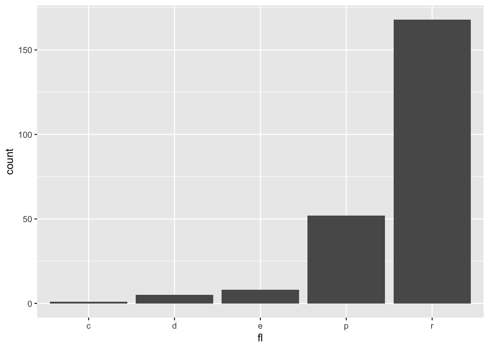
On the x-axis, the chart displays fl, a variable from mpg. On the y-axis, it displays count, but count is not a variable in mpg! Where does count come from? Many graphs, like scatterplots, plot the raw values of your dataset. Other graphs, like bar charts, calculate new values to plot:
bar charts, histograms, and frequency polygons bin your data and then plot bin counts, the number of points that fall in each bin.
smoothers fit a model to your data and then plot predictions from the model.
boxplots compute a robust summary of the distribution and then display a specially formatted box.
The algorithm used to calculate new values for a graph is called a stat, short for statistical transformation.
You can learn which stat a geom uses by inspecting the default value for the stat argument. For example, ?geom_bar shows that the default value for stat is “count”, which means that geom_bar() uses stat_count(). stat_count() is documented on the same page as geom_bar(), and if you scroll down you can find a section called “Computed variables”. That describes how it computes two new variables: count and prop.
ggplot2 provides over 20 stats for you to use. Each stat is a function, so you can get help in the usual way, e.g. ?stat_bin. To see a complete list of stats, try the ggplot2 cheatsheet.
5.10.1 Position adjustments
There’s one more piece of magic associated with bar charts. You can colour a bar chart using either the color aesthetic, or, more usefully, fill:
ggplot(data = mpg) +
geom_bar(aes(x = fl, fill = fl))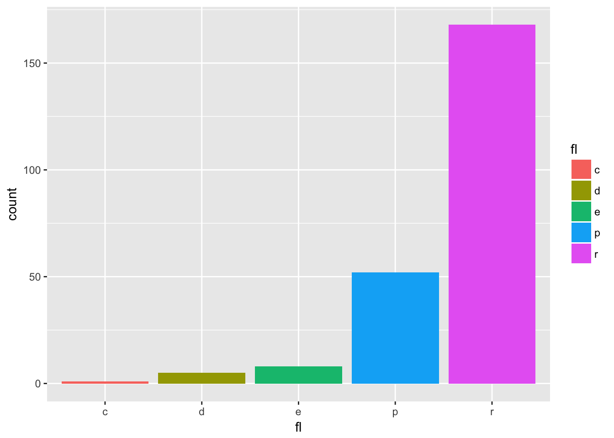
This isn’t particularly useful since both the geom and the color are displaying the same information. Instead, map the fill aesthetic to another variable, like class: the bars are automatically stacked. Each colored rectangle represents a combination of fl and class.
ggplot(data = mpg) +
geom_bar(aes(x = fl, fill = class))
The stacking is performed automatically by the position adjustment specified by the position argument. If you don’t want a stacked bar chart, you can use "dodge" or "fill".
position = "fill"works like stacking, but makes each set of stacked bars the same height. This makes it easier to compare proportions across groups.
ggplot(data = mpg) +
geom_bar(aes(x = fl, fill = class), position = "fill")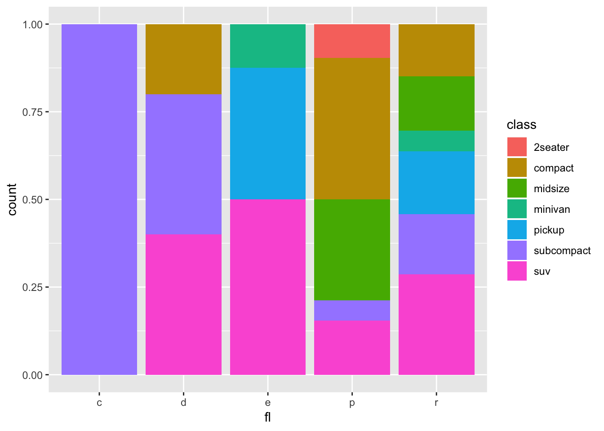
position = "dodge"places overlapping objects directly beside one another. This makes it easier to compare individual values.
ggplot(data = mpg) +
geom_bar(aes(x = fl, fill = class), position = "dodge") 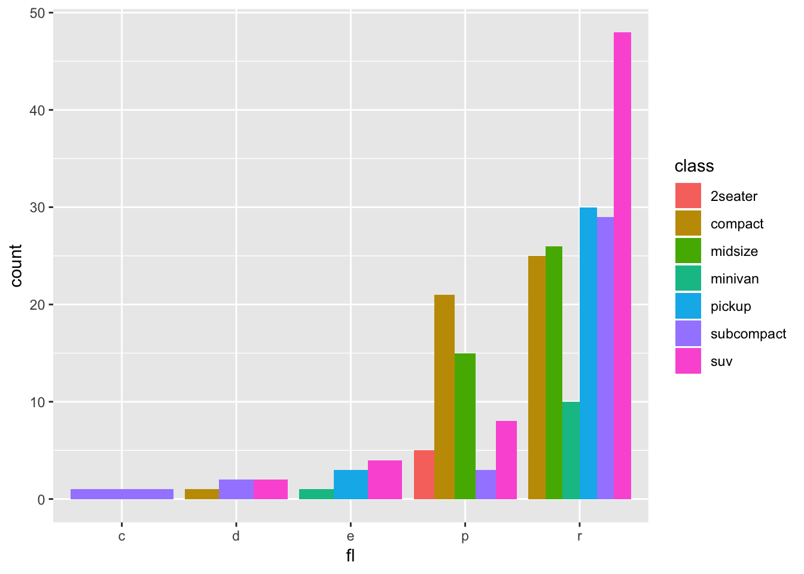
5.10.1 Challenge
With all of this information in hand, please take another five minutes to either improve one of the plots generated in this exercise or create a beautiful graph of your own. Use the RStudio
ggplot2cheat sheet for inspiration. Remember to use the help documentation (e.g.?geom_bar)
Here are some ideas:
- Plot different variables using
geom_bar(). For what variables is this geom useful?- Flip the x and y axes.
- Use
scale_x_discreteto change the x-axis tick labels to “CNG”, “Diesel”, “Ethanol”, “Premium”, and “Regular”
ggplot(data = mpg) +
geom_bar(aes(x = fl, fill = class), position = "dodge") +
scale_x_discrete(labels=c("CNG", "Diesel", "Ethanol", "Premium", "Regular")) +
xlab("Fuel type")5.11 Arranging and exporting plots
After creating your plot, you can save it to a file in your favorite format. The Export tab in the Plot pane in RStudio will save your plots at low resolution, which will not be accepted by many journals and will not scale well for posters.
Instead, use the ggsave() function, which allows you easily change the dimension and resolution of your plot by adjusting the appropriate arguments (width, height and dpi):
my_plot <- ggplot(data = mpg, aes(x = displ, y = hwy)) +
geom_point(aes(color = class)) +
geom_smooth() +
labs(title = "Relationship between engine size and mpg",
x = "Highway MPG",
y = "Engine displacement (liters)") +
theme_bw() +
theme(text=element_text(size = 16))
ggsave("name_of_file.png", my_plot, width = 15, height = 10)Note: The parameters width and height also determine the font size in the saved plot.